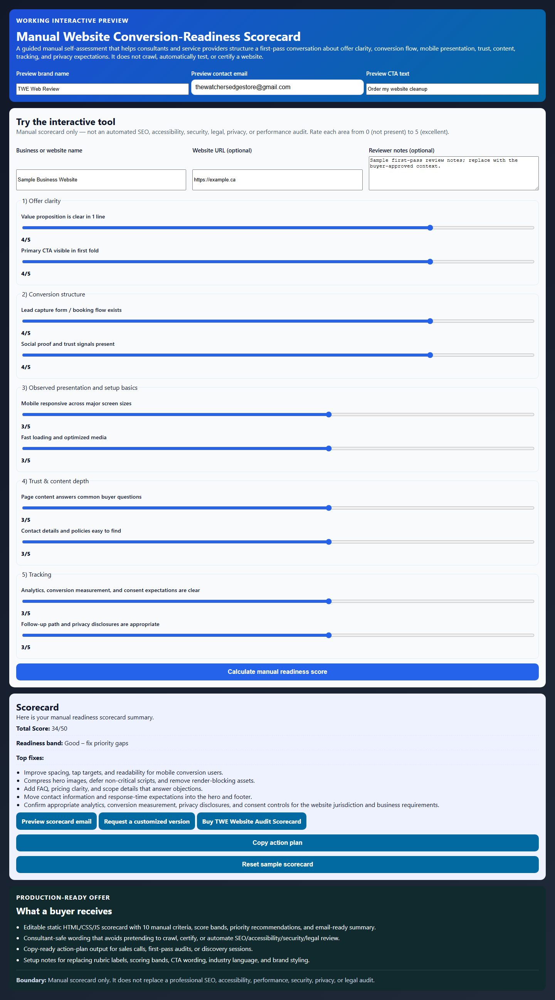
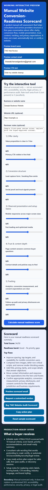

LIVE DEMO MINI-SITE
Manual Website Conversion-Readiness Scorecard
A guided self-assessment demo that helps consultants and service providers structure a first-pass conversation about offer clarity, conversion flow, mobile presentation, trust, content, and tracking. It does not crawl, automatically test, or certify a website.
Actual product screenshots
See the mini-site in use before you buy
These are real captured states from the working static deliverable: desktop output and mobile output, not a generic title card.


Score your website readiness manually
Manual scorecard only — not an automated SEO, accessibility, security, legal, privacy, or performance audit. Rate each area from 0 (not present) to 5 (excellent).
Scorecard
Set the sliders and calculate a score.
Total Score: 0/50
Performance band:
Top fixes: